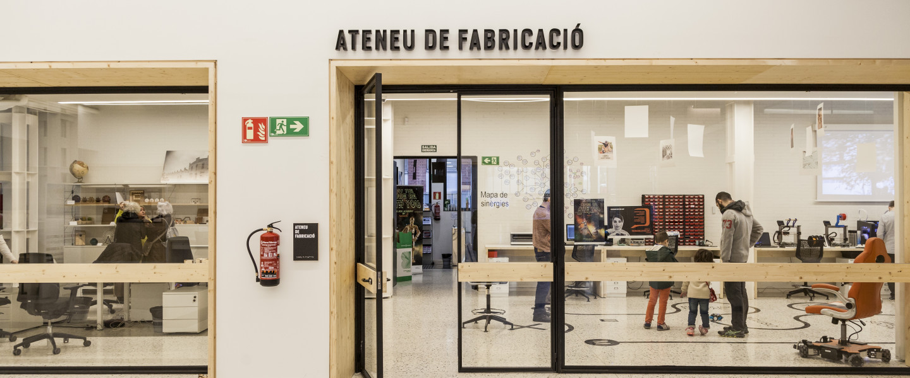

/communication_brand_and_purpose
(06_february_2022)
Kate started this course of "Communication, brand and purpose" by telling us a bit of the
story of branding. It was interesting to see how this idea of promoting something comes from
really far and it has been always in human beings lives, having evidence of branding examples
in Egypt and Mesopotamia at 3000 bC.
The act of communicating something has changed over the years and as well as the society itself.
Nowadays, capitalism has turned communication into something fundamental to increase sales and
control people by sending the exact message through ad campaigns, everyday products we buy,
places we go, etc. We learn to associate each message or image to a brand that sells a whole
experience by storytelling.
During the session, we saw some examples such as the whole campaign of cigarettes for women,
McDonald's colours, celebrities becoming part of the publicity of brands, communication in
politics, etc. Kate also showed us some other examples of communicating in a good way with
well-thought storytelling such as Everlane, OatLy, Hemps Normal and some others.
Finally, we were told to start thinking about our project and our branding, what message do we
want to send, how do we want our brand to look from outside. This is the result of analysing
each of the points in relation to my project and how I want it to be:
(20_february_2022)
During the second session of "Communication, brand and purpose" we put the focus on the
stakeholders of our project. However, before doing that, we checked some of the tasks done by our
classmates to discuss the meaning of vision and mission. Clearly, some of us interpreted the meaning
of those in another way since the principle of both is that they have to be generic and short.
No long sentences or details. Just a short meaningful sentence that expresses the vision (or your
will) and the mission (the "how").
For the stakeholders, we all followed a layout Kate had created and started doing a fast exercise
about our brands regarding those other entities that would be also related to it. Theoretically, we
had to develop this task in groups but since there were a lot of people missing and we hadn't
defined groups from before, we joined some random people and made the exercise a bit sketchy.

The planning of the task was the following: first, we had to define again mission and vision since
now we were in groups. Secondly, we had to choose one of the stakeholders for our project, in our
case the FabLabs in Barcelona. We had to define their profile, needs objectives and reservations.
Then, we had to write down the aim and objectives we wanted to achieve in relation to the
stakeholder. Finally, we had to set a context to communicate all our ideas to the stakeholder and,
of course, the content itself. We finished the class by doing a one-minute speech as if we were
talking directly to the stakeholder.
For me, this task was a bit tricky since I don't really have clear what I want to do in the future,
I just know the context, so having to dig that deep into a topic that is not completely defined is
not easy. However, it was a good chance to think further and to start having in mind that our
stakeholders will be really important in our projects. Also, a good chance to know more about my
classmates' projects.